网格生成
FLAC3D 内置三种主要方法来创建构成网格的网格单元：基本体（primitives）、拉伸体（extrusions）和构建块（building blocks）。各方法不同，均有各自的优缺点。在初始生成网格时，它们互斥（即无法同时使用基本体和拉伸体创建同一组网格单元）。但程序提供相应命令，允许按需对任何方法生成的网格单元进一步修改、组合等。实现模型几何形状的合适方式，可能需要灵活结合这些网格单元生成方法。
此外，FLAC3D 可以根据导入文件创建网格单元。第三方工具（Third-party tools）（基于体积的 CAD 程序，如 Rhino）也可与 Itasca 的高级自动网格划分器 Griddle 配合创建网格单元。后一种方法是最先进的网格单元创建方法，适合最复杂的网格；对于这类网格，FLAC3D 内置工具可能能力不足，或需要过多人工操作。
FLAC3D 还提供用于生成和修改网格单元的其他功能（additional facilities）。对于几何形状复杂、但网格单元面与表面精确吻合在物理上并不重要的情况，通常利用几何描述和网格加密创建八叉树网格，基于几何的加密：八叉树网格划分（Geometry-Based Densification: Octree Meshing）对此有简要说明。对于复杂的互不相交层面或不平整地表，可以使用 按地形生成单元命令（zone generate from-topography） 命令，如地表地形与分层（Surface Topography and Layering）中所示。
本节介绍内置网格生成方法的使用，并简述第三方工具和导入所提供的附加功能。网格生成需要考虑许多因素。选择正确的网格生成方法并高效使用，是 FLAC3D 建模流程的重要部分。
从 FLAC3D 提供的众多工具即可推知，没有一种网格生成方法适合所有情况。最佳方法高度依赖模型几何形状和分析目标。以下是选择内置方法的简要初步指南：
- 如果问题的几何形状非常简单、规则，或者恰好符合
zone create命令提供的某种形状，那么基本体（primitive）方法最快且最容易。 - 如果问题几何形状可以用二维图描述，或者在第三维方向仅有小幅变化，则应首先考虑拉伸（extrusion）。请注意，可将二维初始几何形状导出到构建块中，进行三维修改。
- 如果问题更复杂，但仍由相对规则的形状组成，则应考虑构建块（Building Blocks）。这在涉及隧道、结构或基础的土木工程问题中相当常见。该工具也可通过大量手动调整或有策略地使用贴合工具来处理不规则形状，但建议仅在其余部分规则的模型中，对有限区域这样处理。
- 如果问题非常不规则，和／或涉及复杂、不规则的相交表面，就需要判断网格单元面与描述模型的表面精确吻合是否会影响结果。对于不规则矿体或其他材料边界，这往往对模型总体物理响应不重要。这种情况下，常采用八叉树方法（可能先用构建块创建最关注的区域）。此类模型在采矿中并不少见。
- 如果问题非常不规则，并且网格精确吻合很重要，则应考虑 Itasca 的 Griddle 或其他第三方网格划分工具。
无论采用何种构建方式，网格生成都涉及计算效率、模型几何真实性和结果准确性之间的权衡。以下因素决定这些权衡。
优先采用六面体网格单元，原因是：
- 混合离散方法使其在涉及等体积塑性变形的情况下（例如 Mohr-Coulomb 剪切破坏过程中）响应更准确；以及
- 混合离散方法使其总体响应更准确（响应阶次略高）。
不过，构建几何复杂模型时，六面体网格单元比四面体网格单元更难使用。
计算速度随网格单元数量增加而降低。
更细的网格能够更好地表示较高的应力梯度，因此结果更准确。
网格单元纵横比越接近 1，准确性越高。
如果需要不同网格单元尺寸，则从最小到最大尺寸的变化越平缓，结果越好。
基于基本体的网格
初看之下，FLAC3D 基于基本体的网格生成似乎仅适用于较简单、形状规则的区域。入门章节提供的示例通常为均匀多面体网格。不过，FLAC3D 的基本体形状可以变形，以适应任意复杂体积区域。FLAC3D 提供功能强大的网格生成命令，可操作基本体，使其适应各种三维问题区域形状。
本主题介绍通过命令实现基于基本体的网格的流程。首先在网格生成器概述（Overview of the Grid Generator）中介绍操作概况。随后，在使网格适应简单形状（Fitting the Grid to Simple Shapes）和使用 FISH 生成网格（Grid Generation with FISH）中介绍网格生成的各个方面，并给出为获得准确解而设计网格应遵循的指导原则。每个方面均提供示例说明。
网格生成的一个重要方面是，模型模拟中要表示的所有物理边界（包括在模拟后续阶段将添加的区域或将创建的开挖）都必须在求解步进开始前定义。在顺序分析中，后续将添加的结构形状也必须预先定义，然后移除（通过 单元本构模型指定空（zone cmodel assign null） 或 zone delete），直到需要将其激活。网格生成器旨在便于创建模型中所有所需的物理形状。
本节列出的所有示例均包含在项目文件“grid-generation.f3prj”中。
网格基本体概述
在 FLAC3D 中使用基本体生成网格，是将具有特定连接关系的网格形状拼接起来，形成具有所需几何形状的完整模型。程序提供多种基本体，它们可以相互连接并调整为匹配形状，以创建复杂三维几何体。
各类基本体的网格单元均通过 zone create 命令生成。可以使用 zone gridpoint create 命令定义单个参考点，将网格点放在特定位置，然后在 zone create 命令中引用。可以使用 zone gridpoint merge 命令确保不同基本体正确连接。两个基本体若要合并，其匹配面上的所有网格点都必须位于指定容差内。也可使用 zone attach 命令连接网格单元尺寸不同的基本体网格。必要时，可使用 FISH 调整最终网格，使其与模型区域的表面吻合。以下各节介绍如何使用这些功能创建 FLAC3D 网格。
网格单元生成
基于基本体的 FLAC3D 网格通过 zone create 命令生成。该命令实际访问基本体形状库；每种形状均有特定的网格连接类型。FLAC3D 中可用的基本体形状，按复杂度递增顺序如下。
| 关键字 | 定义 |
|---|---|
| brick | 砖形网格 |
| wedge | 楔形网格 |
| uniform-wedge | 均匀楔形网格 |
| tetrahedron | 四面体形网格 |
| pyramid | 棱锥形网格 |
| cylinder | 圆柱形网格 |
| degenerate-brick | 退化砖形网格 |
| radial-brick | 砖体周围沿径向渐变的网格 |
| radial-tunnel | 平行六面体形隧道周围沿径向渐变的网格 |
| radial-cylinder | 圆柱形隧道周围沿径向渐变的网格 |
| cylindrical-shell | 圆柱壳网格 |
| cylindrical-intersection | 相交圆柱形隧道 |
| tunnel-intersection | 相交平行六面体形隧道 |
正如教程：示范模型——FLAC3D 的使用机制（Tutorial: Illustrative Model — Mechanics of Using FLAC3D）中所示，单独使用 zone create 命令即可创建划分网格后的模型。如果三维区域由简单形状组成，可分别应用基本体，或将基本体连接起来创建 FLAC3D 网格。
例如，可以通过以下命令创建圆柱形隧道的四分之一对称模型
zone create radial-cylinder size 5 10 6 12 fill
size 关键字定义网格中的网格单元数量。对于圆柱形隧道，size 关键字后的每个数值对应特定方向的网格单元数量。本例中，沿圆柱形隧道内半径有五个网格单元，沿隧道轴线有十个网格单元，沿隧道圆周有六个网格单元，隧道周边与模型外边界之间有十二个网格单元。下图显示模型网格。使用 fill 关键字在隧道内填充网格单元。

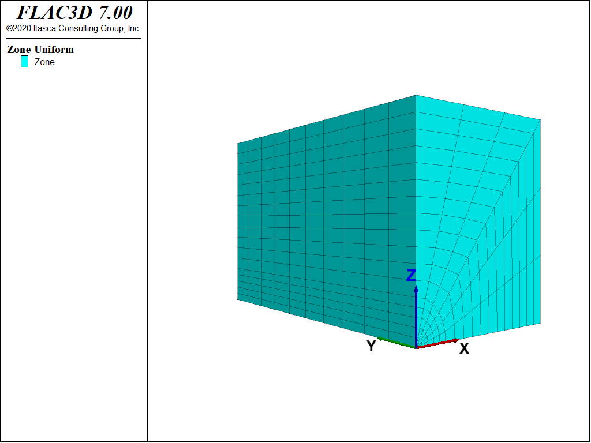
图 1：圆柱形隧道模型的网格。
除 size 和 fill 外，还可使用其他若干关键字定义基本体形状的特征。下表汇总了基本体形状可用的特征关键字。请参阅 zone create 命令及其参考图，以确定每种基本体形状适用的关键字和数值项。例如，单击 创建径向圆柱单元命令（zone create radial-cylinder） 中的缩略图，即可查看圆柱形隧道中 size 各项（i1、i2、i3、i4）应采用的输入顺序。
| 关键字 | 定义 |
|---|---|
| dimension | 内部区域的尺寸（长度） |
| edge | 网格各边的边长 |
| fill | 用网格单元填充内部区域 |
| point | 形状的参考点（角点）。其后应先给出点索引（0 至 16），再给出 \(x,y,z\) 坐标位置。 |
| ratio | 用于设置网格单元间距的等比系数 |
| size | 每种形状的网格单元数量 |
设计网格以在无需过多网格单元的情况下获得准确解时，ratio 关键字尤为重要。例如，如果需要紧邻圆柱形隧道周边布置细网格，以更准确地表示较高应力梯度，可使用 ratio 调整网格单元尺寸，使靠近隧道的网格单元较小，远离隧道时逐渐增大。
要查看使用 ratio 关键字的效果，请输入以下命令
zone create radial-cylinder size 5 10 6 12 ratio 1 1 1 1.2
每个 size 项都由一个 ratio 控制。本例中，第四个 size 项的等比系数为 1.2（即从隧道周边向外边界方向，每个后续网格单元的尺寸是前一个的 1.2 倍——见下图）。可以指定小于 1.0 的比值，将递增改为递减。

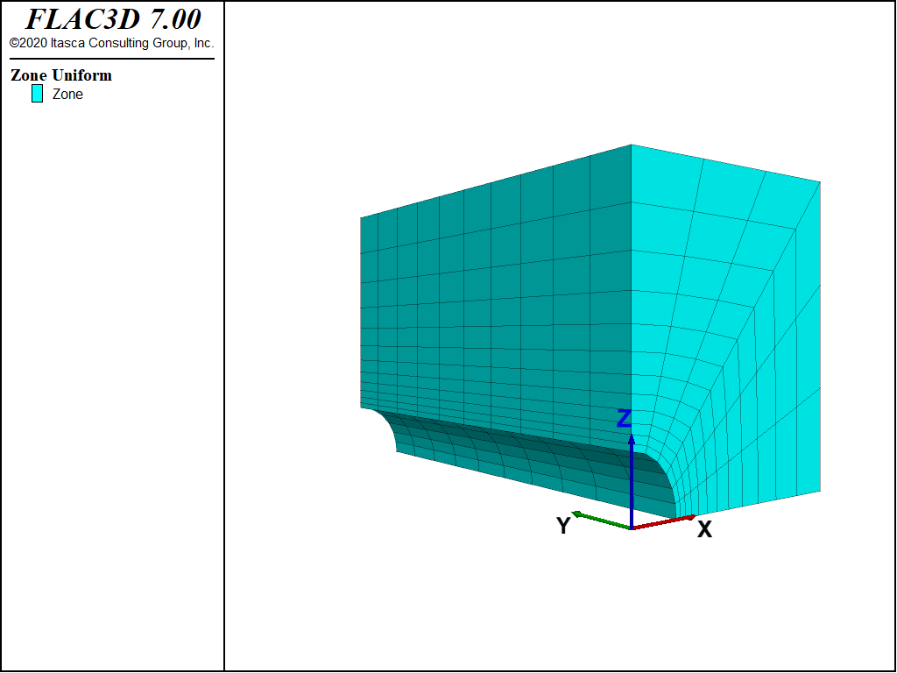
图 2：圆柱形隧道周围沿径向渐变的网格。
在采用合理数量网格单元的同时调整网格尺寸以获得准确结果，可能比较复杂。应记住三个因素：
- 更细的网格能够更好地表示较高的应力梯度，因此结果更准确。
- 网格单元纵横比越接近 1，准确性越高。经验原则是尽量避免纵横比超过约 10。
- 如果需要不同网格单元尺寸，则从最小到最大尺寸的变化越平缓，结果越好。
以下各节的示例说明这些因素的一些应用。
可以发出多条 zone create 命令，将两个或多个基本体形状连接起来构建网格。例如，要构建马蹄形隧道，可以使用 radial-cylinder 和 radial-tunnel 形状，如本例所示：
构建马蹄形隧道——半模型
zone create radial-cylinder size 5 10 6 12 rat 1 1 1 1.2 ...
point 0 (0,0,0) point 1 (100,0,0) point 2 (0,200,0) point 3 (0,0,100)
zone create radial-tunnel size 5 10 5 12 rat 1 1 1 1.2 ...
point 0 (0,0,0) point 1 (0,0,-100) point 2 (0,200,0) point 3 (100,0,0)
构建这些形状时，请参阅 创建径向圆柱单元命令（zone create radial-cylinder） 和 创建径向隧道单元命令（zone create radial-tunnel） 的参考图。模型边界尺寸为 100 × 200 × 100；边界坐标通过 point 关键字定义。网格如下图所示。请注意，radial-tunnel 形状旋转了 90°，以放在 radial-cylinder 形状下方。这通过为 radial-tunnel 形状指定不同的 point 坐标值实现。

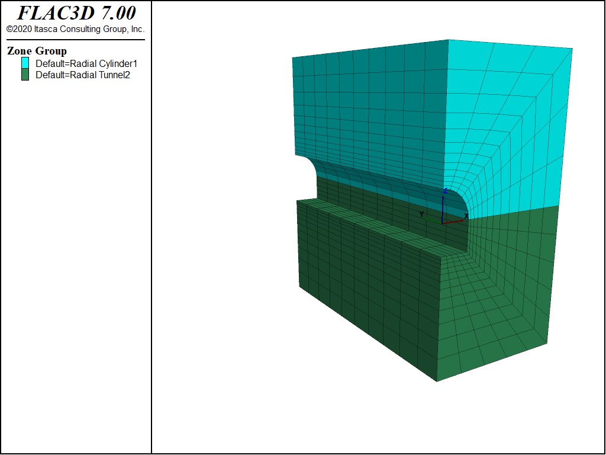
图 3：由 radcylinder 和 radtunnel 基本体构成的马蹄形隧道。
配合 zone create，还可使用两个附加选项帮助创建由多个形状组成的网格：zone copy 和 zone reflect。前者通过为所有网格点添加偏移向量，将一个或多个形状复制到新位置；后者将一个或多个形状关于对称面镜像。下一示例给出将前面命令创建的几何体镜像所需的附加命令。
构建马蹄形隧道——完整模型
zone create radial-cylinder size 5 10 6 12 rat 1 1 1 1.2 ...
point 0 (0,0,0) point 1 (100,0,0) point 2 (0,200,0) point 3 (0,0,100)
zone create radial-tunnel size 5 10 5 12 rat 1 1 1 1.2 ...
point 0 (0,0,0) point 1 (0,0,-100) point 2 (0,200,0) point 3 (100,0,0)
zone reflect dip 90 dip-direction 270 origin (0,0,0)
所得网格如下图所示。对称面为与 \(x\) = 0 平面重合的竖直平面（通过 dip、dip-direction 和 origin 关键字定位）。请注意，倾角（dip）和倾向（dip-direction）假定 \(x\) 对应“东”、\(y\) 对应“北”、\(z\) 对应“上”。
第三个选项 zone gridpoint create 命令，可以在模型区域内定位单个点，适合用于定位基本体的参考点。下文使网格适应简单形状（Fitting the Grid to Simple Shapes）一节给出了一个使用 zone gridpoint create 将两个不同尺寸隧道的仰拱设置在同一高程的示例。

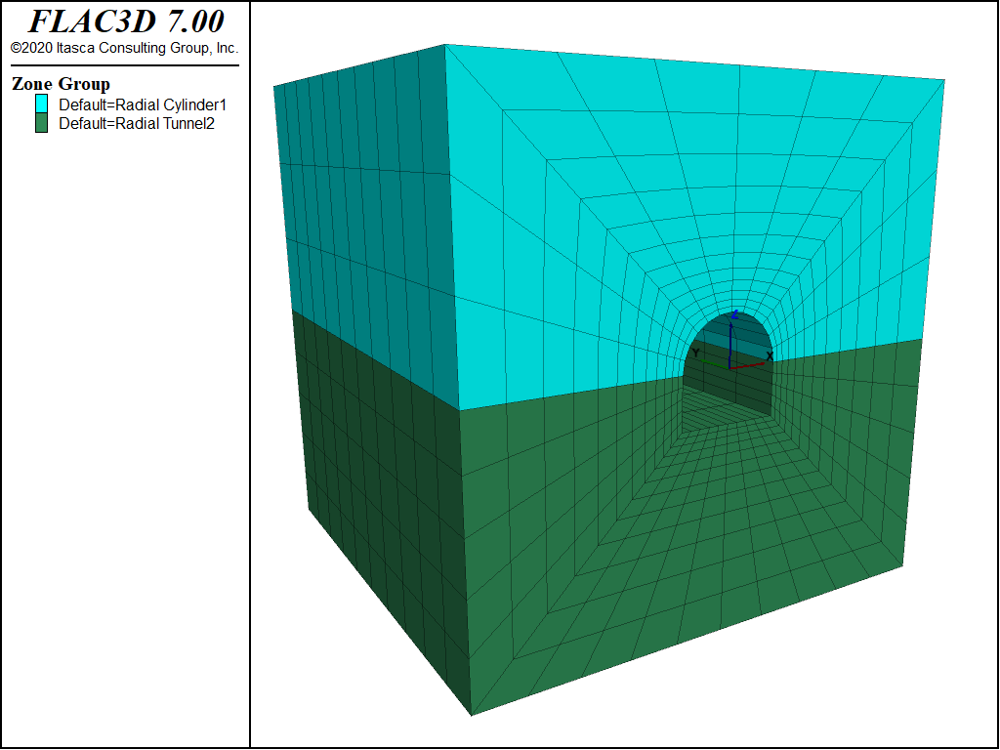
图 4：通过 reflect 关键字生成的完整马蹄形隧道。
连接相邻的基本体形状
使用基本体构建几何体时，各基本体的侧面必须相互连接，形成不间断的连续体。执行 zone create 命令时，会将每个边界网格点与已有网格单元的边界网格点逐一比较，不检查内部网格点。如果两个边界网格点之间的距离位于 1 × 10-7 的容差内（相对于网格点位置向量的模），则认为它们是同一点；在所有后续计算中使用第一个网格点，而不创建新点。
用户负责确保相邻基本体上的所有网格点相互对应。模型创建过程中，通过 zone gridpoint create 命令使用参考点，有助于确保两个基本体的包围砖体均正确指定。应确保网格单元数量正确，并且控制网格单元分布的 ratio 一致。请注意，如果一个基本体的比值方向与另一个相反，则应对其中一个采用倒数比值，以确保边界网格点匹配。
在本版 FLAC3D 中，如果边界网格点不匹配，程序不会发出警告。开始计算后，模型中不匹配的网格点会出现局部速度异常。如果发现某些网格点不匹配，可以在执行 zone create 命令后，用 zone gridpoint merge 命令合并这些网格点。
zone attach 命令可以连接网格单元尺寸不同的基本体。不过，此方法允许指定的网格单元尺寸范围有一些限制。为获得最准确的计算，网格单元尺寸比应为整数倍比（如 2 比 1、3 比 1、4 比 1）。建议先在弹性条件下运行模型，测试所用比值。如果连接网格之间的位移或应力分布出现不连续，可能需要调整网格单元尺寸比。但如果不连续很小且远离关注区域，则可能不会明显影响计算。
下一示例说明 zone attach 命令的用法及不同网格单元尺寸的影响。将网格单元尺寸为 0.5 的砖体基本体，与网格单元尺寸为 1 的砖体基本体连接。所得 \(z\) 位移等值线见下图。
在下一示例中，也可以将前两条命令改为
zone create brick size 4 4 4
zone densify segments 2 range position-x 2 4
其中，加密网格单元（zone densify） segments 2 将上部网格单元（\(z\) 坐标在 2 至 4 之间）加密，每条边分为 2 段。
两个不等尺寸子网格
model large-strain off
zone create brick size 4 4 2 point 0 (0,0,0) point 1 (4,0,0) ...
point 2 (0,4,0) point 3 (0,0,2)
zone create brick size 8 8 4 point 0 (0,0,2) point 1 (4,0,2) ...
point 2 (0,4,2) point 3 (0,0,4)
zone attach by-face range position-z 2
zone cmodel assign elastic
zone property bulk 8e9 shear 5e9
zone gridpoint fix velocity-z range position-z 0
zone gridpoint fix velocity-x range union position-x 0 position-x 4
zone gridpoint fix velocity-y range union position-y 0 position-y 4
zone face apply stress-zz -1e6 range position-z 4 position-x 0,2 position-y 0,2
model history mechanical unbalanced-maximum
model solve
model save 'att'

为测试准确性，进行类似计算，但改用网格单元尺寸恒为 0.5 的单一网格。数据文件如下，结果见后图。该图与上图几乎相同。
用于与两个子网格比较的单一网格
model large-strain off
zone create brick size 8 8 8 point 0 0,0,0 point 1 4,0,0 ...
point 2 0,4,0 point 3 0,0,4
zone cmodel assign elastic
zone property bulk 8e9 shear 5e9
zone gridpoint fix velocity-z range position-z 0
zone gridpoint fix velocity-x range union position-x 0 position-x 4
zone gridpoint fix velocity-y range union position-y 0 position-y 4
zone face apply stress-zz -1e6 range position-z 4 position-x 0,2 position-y 0,2
model history mechanical unbalanced-maximum
model solve
model save 'noatt'

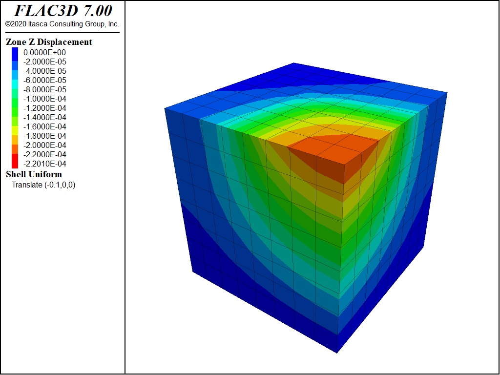
图 6：单一网格中的 z 位移等值线。
使网格适应简单形状
网格生成的目的是使模型网格适应研究的物理区域。对于简单几何体，只需 zone create 命令即可生成适合问题区域的模型网格。要判断 zone create 是否足够，可尝试用该命令文档中的一个或多个基本体形状定义问题区域。
例如，考虑一个涉及三条平行隧道的问题几何（一条服务隧道位于两条较大的主隧道之间的居中位置）。三条隧道均为圆柱形，因此 radial-cylinder 基本体形状是构建隧道网格的合理选择。可假定沿服务隧道中心线存在一个竖直对称面。因此，只需为主隧道之一以及服务隧道的一半创建网格。
注意
本例用于说明较高级的基本体网格单元创建技术。实际中，建议使用二维拉伸器（2D Extruder）创建此类几何体。
构建任何模型时，都有两个重要问题：1）关注区域获得准确解所需的网格划分密度；2）网格边界位置如何影响模型结果。
在应力梯度或应变梯度较高的区域，采用高密度网格划分很重要。通常可通过二维分析确定这些区域。对于本问题，可以方便地运行二维 FLAC 计算，以确定隧道周围可接受的网格单元密度。为演示起见，隧道周围的网格单元尺寸选为大约辅助隧道半径的一半。
该问题网格生成的第一步是使用 radial-cylinder 基本体为隧道创建网格。复杂之处在于隧道尺寸不同，但具有相同的仰拱高程。服务隧道半径为 3 m，主隧道半径为 4 m。模型长度对应于隧道 50 m 的长度。下例给出了创建隧道周围网格的命令。
为仰拱高程相同的两条隧道创建网格
; 主隧道
zone create radial-cylinder point 0 (15,0,0) point 1 (23,0,0) ...
point 2 (15,50,0) point 3 (15,0,8) ...
size 4 10 6 4 dim 4 4 4 4 rat 1 1 1 1 fill ...
group 'service'
zone reflect dip 90 dip-direction 90 origin (15,0,0)
zone reflect dip 0 origin (0,0,0)
; 服务隧道
zone gridpoint create (2.969848, 0.0,-0.575736) name 'p2124'
zone gridpoint create (2.969848,50.0,-0.575736) name 'p2125'
zone create radial-cylinder point 0 (0, 0,-1) point 1 (7,0,0) ...
point 2 (0,50,-1) point 3 (0,0,8) ...
point 4 (7,50,0) point 5 (0,50, 8) ...
point 6 (7,0,8) point 7 (7,50, 8) ...
point 8 gridpoint 'p2124' ...
point 10 gridpoint 'p2125' ...
size 3 10 6 4 dim 3 3 3 3 rat 1 1 1 1
zone create radial-cylinder point 0 (0, 0,-1) point 1 (0,0,-8) ...
point 2 (0,50,-1) point 3 (7,0,0) ...
point 4 (0,50,-8) point 5 (7,50, 0) ...
point 6 (7,0,-8) point 7 (7,50,-8) ...
point 9 gridpoint 'p2124' ...
point 11 gridpoint 'p2125' ...
size 3 10 6 4 dim 3 3 3 3 rat 1 1 1 1
首先创建主隧道网格：生成四分之一网格，再关于水平和竖直平面镜像，创建整个隧道的网格。辅助隧道不能使用 reflect 选项，因为要求辅助隧道仰拱与主隧道位于同一高程。必须调整 radial-cylinder 基本体中确定辅助隧道半径的顶点。为此，先使用 zone gridpoint create 命令定义这些位置。一个 radial-cylinder 基本体中的角点 point 8 和 point 10，以及另一个基本体中的 point 9 和 point 11，均定位在这些参考点上。这确保生成网格时，两基本体的边界网格点匹配。下图显示两条隧道的网格。\(x\) = 0 处的竖直平面为对称面。

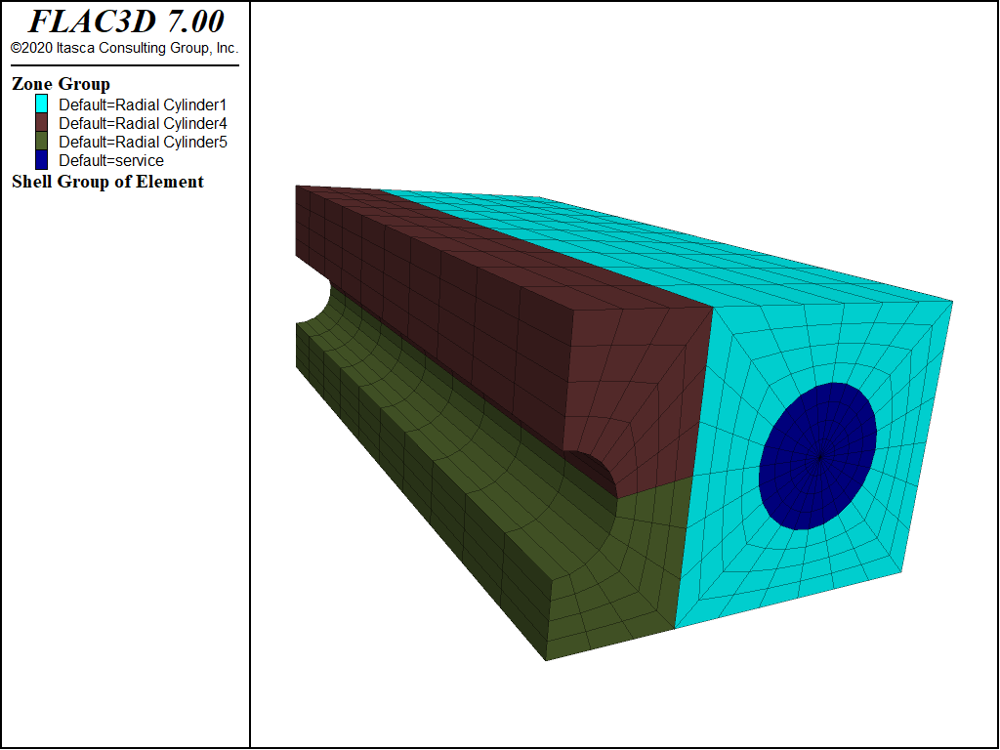
图 7：辅助隧道和主隧道的内部网格。
注意
*这会创建与网格刚性连接的衬砌。若需要衬砌与网格之间的连接能够滑动／分离，可以使用 structure liner create 命令指定。
本模型初始时，主隧道内填有网格单元，辅助隧道内未填充。本模型分析的开挖和施工阶段在本主题后文介绍。开挖主隧道之前，先为辅助隧道定义衬砌。通过 structure shell create 命令实现，该命令创建由结构壳单元组成的隧道衬砌。*一般应使用结构单元表示薄隧道衬砌，因为与有限差分网格单元组成的衬砌相比，它们能够更准确地表示衬砌弯曲。有关 FLAC3D 结构单元功能的详细信息，见结构单元（Structural Elements）一节。下一示例给出创建衬砌的命令。
在辅助隧道内创建衬砌
; 衬砌
structure shell create by-zone-face range cylinder ...
end-1 (0,0,-1) end-2 (0,50,-1) ...
radius 3
衬砌包含 240 个结构壳单元，通过 143 个结构节点连接与 FLAC3D 网格相连。带有衬砌的网格如下图所示。

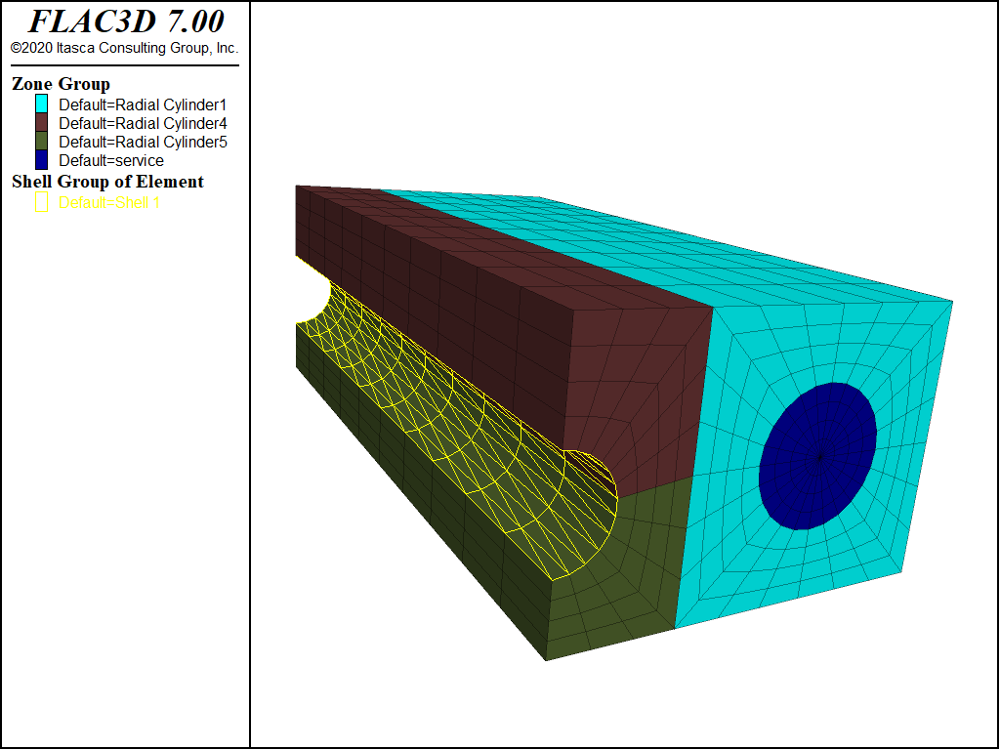
图 8：辅助隧道内的衬砌单元。
最后，在隧道网格周围创建外边界网格。对于地下开挖分析，边界距开挖周边的距离应约为十倍开挖直径。但该距离可以随分析目的变化。如果主要关注破坏，模型边界可以更近；如果位移很重要，则可能需要增大至边界的距离。
通过模型试算评估边界效应十分重要。首先使用 FLAC 建立粗略二维网格，在改变边界距离的同时，分别采用固定和自由边界条件，确定边界效应的上下界。随后，可以根据关注区域计算应力或位移的差异评估改变边界的影响。然后应在 FLAC3D 中使用粗网格测试边界位置。
本模型的边界网格由 radial-tunnel 和 brick 基本体创建。使用 zone reflect 命令将网格关于 \(z\) = 0 平面镜像。range 关键字用于限制 zone reflect 的作用范围。见以下示例。
本问题的最终网格如下图所示。
创建边界网格
; 外边界
zone create radial-tunnel point 0 ( 7, 0, 0) point 1 (50, 0, 0) ...
point 2 ( 7,50, 0) point 3 (15, 0,50) ...
point 4 (50,50, 0) point 5 (15,50,50) ...
point 6 (50, 0,50) point 7 (50,50,50) ...
point 8 (23, 0, 0) point 9 ( 7, 0, 8) ...
point 10 (23,50, 0) point 11 ( 7,50, 8) ...
size 6 10 3 10 ratio 1 1 1 1.1
zone create brick point 0 ( 0, 0, 8) point 1 ( 7, 0, 8) ...
point 2 ( 0,50, 8) point 3 ( 0, 0,50) ...
point 4 ( 7,50, 8) point 5 ( 0,50,50) ...
point 6 (15, 0,50) point 7 (15,50,50) ...
size 3 10 10 ratio 1 1 1.1
zone reflect dip 0 origin (0,0,0) ...
range position-x 0 23 position-y 0 50 position-z 8 50
zone reflect dip 0 origin (0,0,0) ...
range position-x 23 50 position-y 0 50 position-z 0 50

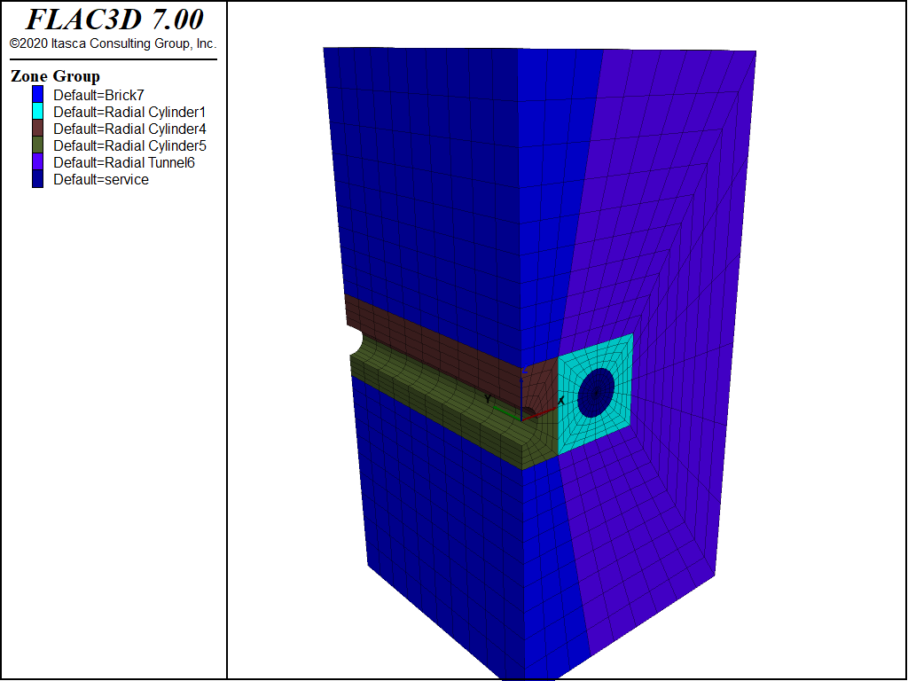
图 9：辅助隧道和主隧道的完整网格。
使用 FISH 生成网格
FISH 可用于指定不易通过 FLAC3D 内置基本体获得的几何形状。也可以使用 FISH 创建自己的基本体形状。以下示例构建球形空腔周围沿径向渐变的网格。只生成八分之一网格，随后可将网格镜像，以创建完整球形空腔。
以 radial-brick 基本体为基础创建“radsphere”形状。首先定义描述立方体内球体的参数：球形空腔半径、外立方体边长、沿外立方体边的网格单元数量，以及从内立方体到外立方体的径向网格单元数量。然后定义 radial-brick，使球形空腔内接于内立方体。下一示例列出以 1.2 的等比系数创建初始网格的命令，网格见其后图示。
创建球形空腔周围径向渐变网格的参数
[global rad=4.0 ] ; 球形空腔半径
[global len=10.0 ] ; 外围立方体的边长
zone create radial-brick edge [len] size 6,6,6,10 ...
rat 1.0 1.0 1.0 1.2 dim [rad] [rad] [rad]

现在重新定位径向砖体内的网格点，形成球形空腔周围的网格。FISH 函数 make_sphere 遍历所有网格点，并沿从球心到外部盒体各侧面网格点的径向线进行线性插值，重新映射其坐标。下一示例给出 FISH 函数 make_sphere，其后图示显示最终网格。
用于定位网格点以生成球形物体周围网格的 FISH 函数
fish define make_sphere
; 遍历所有网格点（GP），并重新映射其坐标：
; 假定 len>rad
loop foreach local gp gp.list
local p = gp.pos(gp) ; 获取网格点坐标：p
local dist = math.mag(p)
if dist>0 then
local k = rad/dist
local a = p * k ; 计算 a：沿径向位于 p“下方”的球面上的点。
local maxp = math.max(p->x,p->y,p->z)
k = len/maxp
local b = p * k ; 计算 b：外围立方体边界上的点，
; 沿径向位于 p 的“上方”。
local u = (maxp-rad)/(len-rad) ; 线性插值：P=A+u*(B-A)
gp.pos(gp) = a + (b-a)*u
end_if
end_loop
end
program return

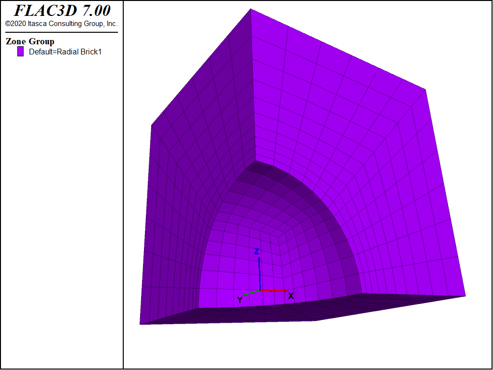
图 11：球形空腔周围沿径向渐变的网格。
基于拉伸的网格
\(i\) 拉伸（Extrusion）窗格可将二维几何形状沿第三维拉伸（线性延伸），由此创建网格。
在 \(i\) 拉伸（Extrusion）窗格中处理拉伸体时，所有改变模型状态的操作都会生成为命令。这些命令会在 \(i\) 控制台（Console）窗格中回显，并记录在 \(i\) 状态记录（State Record）窗格中。可以完全通过 \(i\) 拉伸（Extrusion）窗格创建网格单元，然后从保存文件而非创建数据文件开始下一阶段建模；有时这种方式更合适。用于创建几何模型状态的命令始终随保存文件存储。不过，使用数据文件通常更有优势，因为它更小，而且在必要时重建几何体更方便。可以使用 \(i\) 状态记录（State Record）窗格，将用于创建拉伸体的所有命令导出到数据文件。这些命令的文档见拉伸（Extrude）一节。
\(i\) 拉伸（Extrusion）窗格所提供工具的用法，在本文档的 \(i\) 拉伸（Extrusion）窗格一节中有详细说明。以下内容概述如何用它创建网格。
创建集合
开始拉伸前，必须在拉伸窗格（Extrusion Pane）中创建新集合（如果窗格不可见，可通过主菜单打开）。可以定义多个拉伸集合。工具栏上的“拉伸体”选择器用于在已定义集合之间切换。一次只能激活一个集合。
定义二维几何形状
拉伸窗格有两种视图模式：“构建”视图（）和“拉伸”视图（）。前者用于定义二维几何形状，后者用于定义线性拉伸，下文下一节将介绍。
通过绘制点及点之间的边来定义二维几何形状。点可通过坐标定义，也可“徒手”定义。边可以是直线、曲线或圆弧。曲线可通过控制点调整为任意形状，所含控制点数量可按需要增加。使用分割工具还可沿边进一步细化。
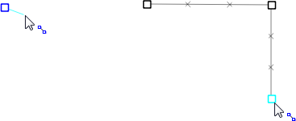
图 12：定义点（左）和边（右）。沿边的“叉号”预览网格划分。绘制一条边时，默认先为其分配三个网格单元。
当若干边组合成三角形或四边形时，可以将其定义为块体。形状一经“成块”，便可对其划分或重新划分网格，或进行分组。在 FLAC3D 中将拉伸体生成为网格时，只有拉伸集合中已成块的部分才会创建网格单元。

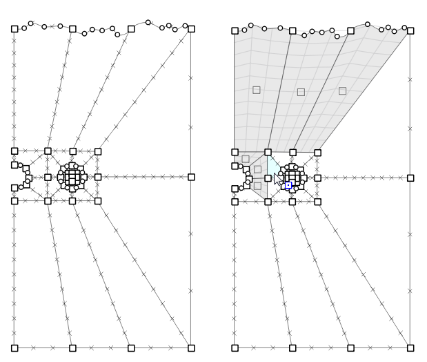
图 13：一组点和边组合成四边形或三角形（左）；随后以交互方式将其转化为块体（右）。
网格划分与其他操作
通过指定各边所需网格单元数量，沿边设置网格划分。网格单元设置将按需在模型中传递。可对块体应用倍增系数，将网格划分按整数倍加密。
此外，还提供自动网格划分功能，可通过定义统一网格单元长度、几何体最大跨度方向所需网格单元数量，或几何体内网格单元总数，一次对二维几何形状中的所有块体划分网格。
分组：可以在“构建”视图中选择一个或多个点、边或块体，并将其赋予分组，也可在“拉伸”视图中为线段和节点赋予分组。完成后，从已分组点、边或块体生成的任何网格单元，都会归入指定名称的网格单元分组。“构建”视图中指定的分组位于“Construction”槽位，“拉伸”视图中指定的分组位于“Extrusion”槽位。此外，每个块体生成的网格单元会自动在“Block”槽位获得一个唯一名称，而“拉伸”视图中的每个线段会在“Segment”槽位获得一个唯一名称。
分割：分割工具可用于分割边或块体。执行分割操作时，分割会根据需要传播到所有现有边和块体。
描摹：可以导入位图或矢量（DXF）图像，调整其大小和方向，并用作构建二维几何形状的“描摹”参考。对于后者，DXF 保留其对象属性，因此在构建拉伸体的点和边时可以捕捉到它。
定义拉伸
绘制二维几何形状并定义块体后，切换到“拉伸”视图，定义拉伸范围及其划分（分块），从而完成拉伸体。这是一维操作：用户在水平线上设置点以划分块体，随后通过各线段定义该线段所代表块体内部的网格划分。
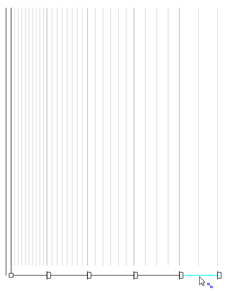
图 14：在“拉伸”视图中确定拉伸范围，并将其划分为带网格的块体。
第三维完全指定后，即可从拉伸集合创建网格单元。也可以选择将拉伸集合的三维块体集合导出到构建块窗格（Building Blocks Pane）中的新构建块集合（见下一主题基于构建块的网格（Building Blocks-Based Grids）），以便在由集合生成网格单元之前进一步编辑和细化。
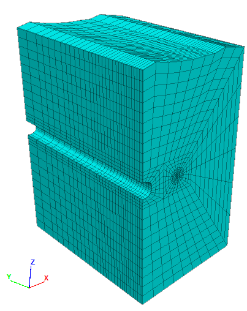
图 15：从拉伸集合创建的网格单元。
将上图与为仰拱高程相同的两条隧道创建网格（creating a grid for two tunnels with the same invert elevation）示例中的最终网格（final grid）比较。可以看到，所得网格相近，但这里在拉伸体顶部添加了地形，并使网格划分沿拉伸方向渐变。
基于构建块的网格
构建块窗格（Building Blocks Pane）提供了一种创建网格的功能：将三维“构建块”相互拼合，再划分网格。
在 \(i\) 构建块（Building Blocks）窗格中处理拉伸体时，所有改变模型状态的操作都会生成为命令。这些命令会在 \(i\) 控制台（Console）窗格中回显，并记录在 \(i\) 状态记录（State Record）窗格中。可以完全通过 \(i\) 构建块（Building Blocks）窗格创建网格单元，然后从保存文件而非创建数据文件开始下一阶段建模；有时这种方式更合适。用于创建几何模型状态的命令始终随保存文件存储。不过，使用数据文件通常更有优势，因为它更小，而且在必要时重建几何体更方便。可以使用 \(i\) 状态记录（State Record）窗格，将用于创建拉伸体的所有命令导出到数据文件。这些命令的文档见拉伸（Extrude）一节。
\(i\) 构建块（Building Blocks）窗格所提供工具的用法，在本文档的 \(i\) 构建块（Building Blocks）一节中有详细说明。以下内容概述如何用它创建网格。
创建构建块集合
开始使用构建块前，必须在构建块窗格（Building Blocks Pane）中创建新集合（如果窗格不可见，可通过主菜单打开）。可以定义多个集合。单击窗格空白区域的任意位置，即可创建初始集合。工具栏的块体集合选择器用于在已定义集合间切换。一次只能激活一个集合。
将块体吸附拼接
初始化新集合时，会提供一个块体（假定已在前一对话框中勾选相应复选框）。可以使用添加块体工具（ ）添加块体，逐步构建集合：先选择现有块体上要添加块体的面，再滚动鼠标滚轮选择待添加块体的类型。四边形面上可添加六面体“砖体”，或两种方向之一的“楔体”。三角形面上可添加“楔体”或“四面体”。
）添加块体，逐步构建集合：先选择现有块体上要添加块体的面，再滚动鼠标滚轮选择待添加块体的类型。四边形面上可添加六面体“砖体”，或两种方向之一的“楔体”。三角形面上可添加“楔体”或“四面体”。
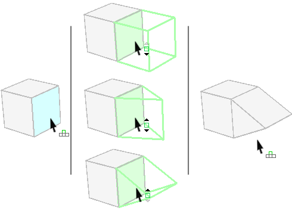
图 16：左：使用“添加块体”工具选择现有块体的一个面；中：滚动鼠标滚轮切换可添加的块体类型；右：单击所需的“预览块体”，将其放置到位。
块体由点（顶点）、边和面组成。可以对整个块体或其组成部分进行操作。创建块体时，默认沿每条边划分三个网格单元。
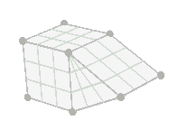
图 17：在基本“选择”模式下，显示块体的组成部分（面、边、点）。面上灰色填充的网格表示块体的网格划分。
可以按需要并在合理范围内，单独或成组地移动、缩放、旋转块体或其同类组成部分（例如，一组点可以移动或旋转，但由于点没有尺寸，不能调整大小；类似地，单个点不能旋转）。可通过屏幕控件手动完成这些操作；也可以在控制面板（Control Panel）中，对选定对象指定各项性质（位置、旋转等）。
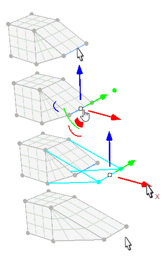
图 18：选择并移动块体的一条边。
尽管构建块窗格（Building Blocks Pane）还有许多其他功能（在下文各节介绍），但最简单情况下，仅按上述步骤就可以构建整个网格。当几何形状完成并按需设置网格划分后，按下构建块窗格中的“生成网格单元”按钮（ ），即可生成网格单元，并在模型窗格中显示。
），即可生成网格单元，并在模型窗格中显示。
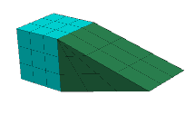
图 19：由构建块集合生成的网格单元。请注意，构建块集合中每个块体内的网格单元均按块体自动归为一组（这里以网格单元着色表示）。
细化操作与实用工具
上述简单图示说明了构建块功能的基本概念。借助其他工具和操作，构建基于构建块的网格时可以实现复杂得多的几何形状，其中部分功能包括：
- 导入 CAD 数据（DXF、STL 等），可构建与现有三维几何形状吻合的构建块集合（可视为描摹）。
- CAD 数据是支持点捕捉的对象，便于塑造块体以适应导入的几何形状。
- 可以分割边；分割会自动传播到现有块体。
- 添加控制点后，可以将边弯曲为任意形状。
- 可按需隐藏／显示块体。
- 可以复制和粘贴块体。
- 未连接的块体可以通过匹配相同类型的面相互吸附拼接。
- 可以复制构成一个层的选定块体组，并为其指定变化的厚度。
- 可以以交互方式设置／修改对象性质，也可通过控制面板（Control Panel）精确指定。
- 可以“循环切换”三角形面上网格单元的方向。
- 同类对象可以归为一组；从这些对象派生的网格单元在生成时将保留该分组赋值。
- 网格划分有多种控制方式（见下一主题）。
- 提供预先构建的形状与几何体库。
如上所述，本主题仅用于概述构建块功能。有关上述功能的详细说明及使用指导，见构建块窗格（Building Blocks Pane）各主题。

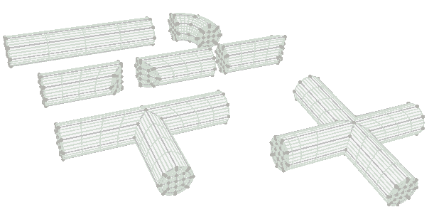
图 20：预建块体库中的“圆柱部件”块体。
网格划分
沿块体边设置网格划分。“网格单元”属性指定沿边应有多少个网格单元。可使用比值或系数，在需要较小网格单元的边端部设置更细的尺寸。可为块体设置倍增系数，使块体内现有网格单元数量按给定倍数增加。自动网格划分功能允许一次设置整个构建块集合的网格划分。其选项包括：全体采用统一网格单元尺寸；指定沿模型最大尺寸方向使用的网格单元数量；或指定集合中的网格单元总数。
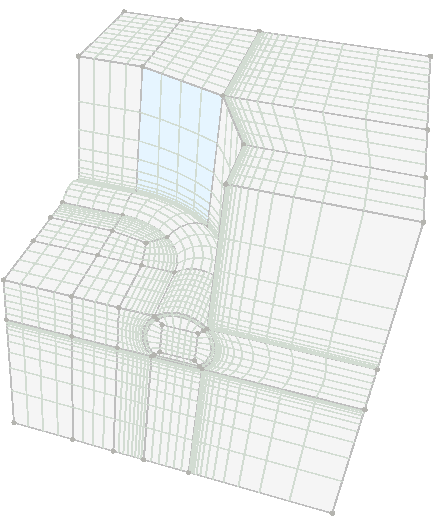
图 21：“带墙体的圆柱隧道 90 度转弯”预建块体。通过比值设置，加密了隧道周围的网格单元。隧道上方块体已隐藏，以便访问和查看块体集合内部。
来自 FLAC3D 外部的网格
除内置网格生成方法外，还可以导入在 FLAC3D 之外由第三方应用创建的网格。目前，FLAC3D 支持直接导入三种不同文件格式：
- FLAC3D 网格文件（*.f3grid）
- ANSYS 文件（*.lis）（请注意，此格式文件通常成对出现：先加载节点文件，再加载单元文件。）
- ABAQUS 文件（*.inp）
FLAC3D 网格文件是 Itasca 开发的格式，相对于其他格式具有两个主要优点：
- 可导出并保留元数据，即网格单元、面和网格点的分组及附加变量赋值。
- 提供二进制版本，文件更小，导入更快。
可以通过 导入网格（zone import） 命令、主菜单中的项，将这些文件导入 FLAC3D 模型；对于 *.f3grid 文件，还可在打开到项目（Open into Project）对话框中选择文件进行导入。
导入后，文件应作为条目出现在 \(i\) 项目（Project）窗格的“数据文件”部分，并添加到为归档或传递项目而创建的任何打包文件中。
几乎所有第三方网格划分程序都支持以 ANSYS 或 ABAQUS 格式（或两者）导出。如果您已有高级网格生成工具，或因使用经验而偏好某种工具，可以继续使用这些工具创建 FLAC3D 模型。一些示例包括：
Itasca 提供一款与广泛使用的 CAD 程序 Rhino 软件（Rhino） 配合的强大网格生成工具，名为Griddle 网格工具（Griddle）。其简要概述见来自 Rhino/Griddle 的网格（Grids from Rhino/Griddle）。
来自 Rhino/Griddle 的网格
Rhinoceros（Rhino）是基于 NURBS 曲线和曲面表示的 CAD 软件，可在三维空间中创建由网格曲面组成的封闭体积。[1] Griddle 是 Itasca 功能强大的自动网格生成器，可创建供 FLAC3D 或 3DEC 使用的全四面体或以六面体为主的非结构网格。这些工具一并销售，但与 FLAC3D 分开销售。它们是为 FLAC3D 创建复杂网格的最先进方法。当 FLAC3D 模型所需网格超出 FLAC3D 内置功能时，应考虑这些工具。本主题为可能需要这样做的 FLAC3D 用户提供简要介绍。
使用 Rhino/Griddle 创建复杂网格的流程很直接。首先，在 Rhino 中构建或导入模型几何形状。接着，应用 Rhino 的表面网格划分。然后使用 Griddle，自动将表面重新划分为所需密度和类型（三角形、四边形）的网格。随后调用 Griddle 体网格划分器，用网格单元填充几何体（全四面体或以六面体为主）。工作流程如下图所示。
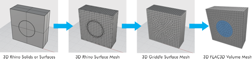
图 22：从左到右：在 Rhino 中描述初始体积；使用 Rhino 自带网格划分工具对表面进行初始划分；使用 Griddle 按用户要求重新划分表面；以重新划分的表面为基础对体积划分网格单元，再导入 FLAC3D。
为获得高质量数值解，一般优先采用全六面体网格。不过，Rhino/Griddle 能够创建以六面体为主的网格，即主要由六面体单元组成，必要时也使用楔体、棱锥和四面体单元以适应几何形状；如果这能大幅降低网格复杂性带来的难度，则可能是更好的权衡。
考虑以下两个网格。第一个为全六面体网格。为生成它，必须将基础几何体分解（分块）为六面体、四面体和棱柱实体。该步骤耗时较长。本例的网格生成总时间为五小时。
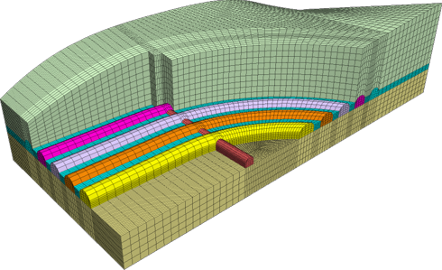
第二个网格以六面体为主。使用 Griddle 时，仅以隧道和土层的边界面作为输入，无需将模型分解为简单基本体形状。因此，该网格生成总时间不足一小时。
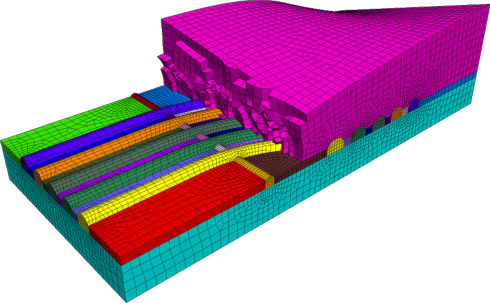
网格生成：附加功能
这些附加网格创建功能有一个共同点：都以现有网格作为进一步修改的起点。因此，可以与其他任何网格生成方式组合使用。
加密（Densify）操作将网格单元细分为多个网格单元，使用户可在特别关注的区域，对粗网格进行更精细的离散。
将基于几何的筛选（Geometry-based filtering）与加密（Densification）结合，可生成八叉树网格（Octree meshes）。
最后，可以从现有网格单元表面向不规则几何表面拉伸新网格单元。这可用于创建复杂分层（只要各层不相交）或不规则地表地形。见地表地形与分层（Surface Topography and Layering）。
网格加密
先生成简单网格，再通过 加密网格单元（zone densify） 命令加密。以此方式创建的新网格单元和面，会复制原对象的分组赋值及附加变量值，但会失去所有材料模型、应力和其他状态信息。
注意
也可以在模型窗格（Model Pane）中以交互方式加密网格单元。选择一组网格单元后，在操作列表中选择“加密”（）选项。

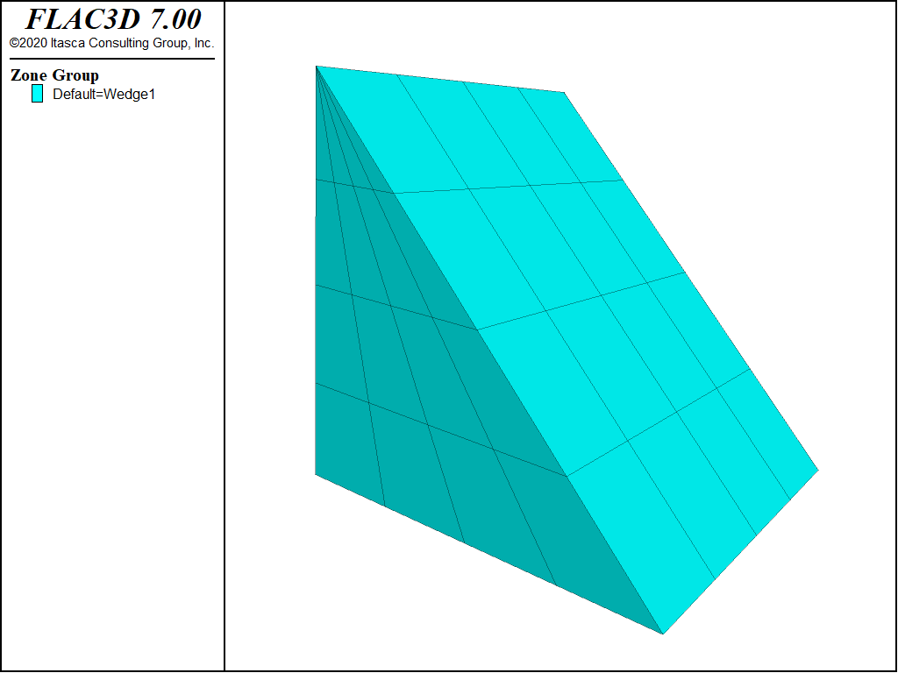
图 25：原始网格。
以下示例给出将现有网格单元每条边分为两段、从而加密简单网格的命令。上图为原始网格；示例后的图为加密网格。
通过细分原始网格单元的每条边加密网格
model new
model large-strain off
zone create wedge size 4 4 4
plot 'Wedge' export bitmap filename 'densify1.png'
;
zone densify segments 2
plot 'Wedge' export bitmap filename 'densify2.png'

除指定划分段数外，还可以通过 edge-limit 关键字指定细化网格单元的最大长度。无论如何使用 edge-limit 或 segments，FLAC3D 始终通过将网格单元边划分为整数段来加密网格。下一示例说明如何将边长限值设为 0.5，从而加密 \(z\) 坐标在 2 至 4 之间范围内的网格。
通过指定边长限值加密网格
model new
model large-strain off
zone create brick size 4 4 4
plot 'Brick' export bitmap filename 'densify3.png'
;
zone densify edge-limit 0.5 range position-z 2 4
zone attach by-face
;
plot 'Brick' export bitmap filename 'densify4.png'

本例中，单元附着按面（zone attach by-face） 命令用于将各子网格的面刚性连接，形成单一网格。如果不同网格单元的面沿边网格点数量不同，应始终在 加密网格单元（zone densify） 命令后使用 单元附着按面（zone attach by-face） 命令。上图为本例原始网格，下图为加密网格。

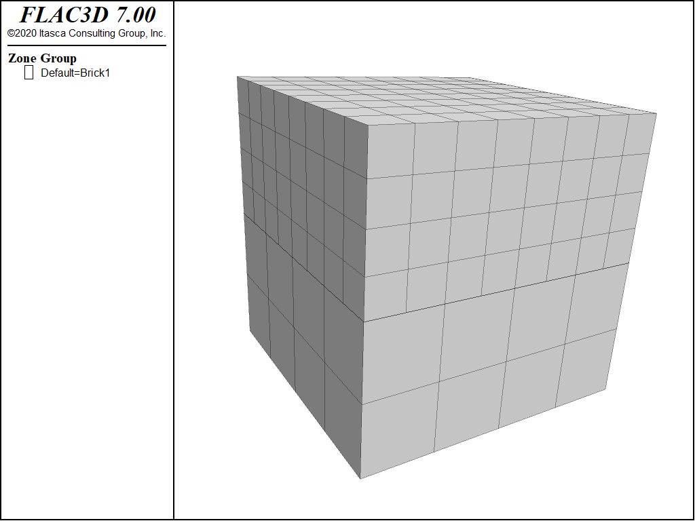
图 28：通过设置最大长度加密后的网格。
有时，几何集合中的几何数据定义了需要加密的空间。下一示例给出对两个几何集合之间空间进行加密的方法。关于利用几何数据识别模型对象的一般概述和说明，见使用几何数据（Working with Geometric Data）。
本例中，每个几何集合由两个多边形定义。加密网格单元（zone densify） 命令使用 geometry 范围元素，选择满足以下条件的网格单元：从其形心沿 (0,0,1) 方向发出的射线，与组成 几何集 setA（setA） 或 几何集 setB（setB） 的任意多边形相交一次。详细信息见 几何空间范围（range geometry-space） 文档。
这里使用 单元附着按面（zone attach by-face） 命令将各子网格的面刚性连接，为所有网格单元形成单一网格。接下来两图分别绘制原始网格和加密网格。
使用几何信息加密网格
model new
model large-strain off
zone create brick size 10 10 10
;
geometry set "setA" polygon create by-positions (0,0,1) (5,0,1) ...
(5,10,1) (0,10,1)
geometry set "setA" polygon create by-positions (5,0,1) (10,0,5) ...
(10,10,5) (5,10,1)
geometry set "setB" polygon create by-positions (0,0,5) (5,0,5) ...
(5,10,5) (0,10,5)
geometry set "setB" polygon create by-positions (5,0,5) (10,0,10) ...
(10,10,10) (5,10,5)
plot 'Brick2' export bitmap filename 'densify5.png'
zone densify segments 2 range geometry-space "setA" set "setB" count 1
zone attach by-face
;
plot 'Brick2' export bitmap filename 'densify6.png'

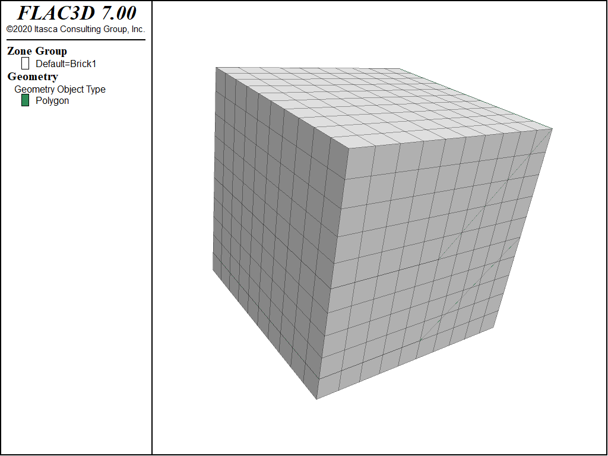
图 29：原始网格。

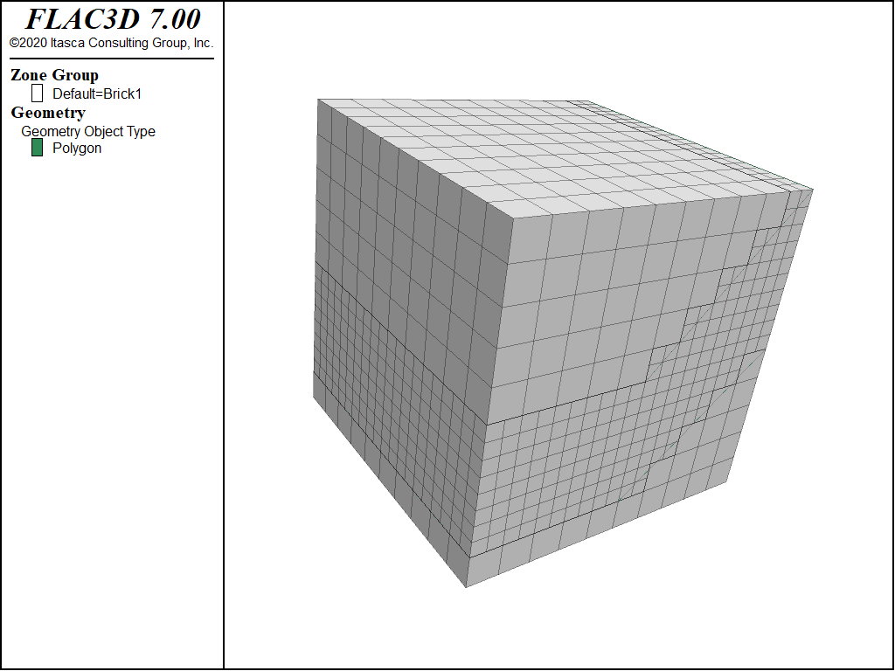
图 30：使用几何数据加密后的网格。
基于几何体的加密：八叉树网格生成
当精确贴合表面在物理上并不重要时，常依据几何集合中的几何数据进行网格加密，近似表示极不规则边界处的材料属性变化。矿体和其他类型地质结构通常属于这一类。
加密网格单元（zone densify） 命令可根据网格单元与几何表面的距离选取网格单元并细分。将其与 几何距离范围（range geometry-distance） 范围元素结合，并使用 repeat 关键字，即可通过一条命令创建八叉树网格。
例如，命令
zone densify segments 2 gradient-limit edge-limit 0.05 ...
repeat range geometry-distance 'intcylinder' gap 0.0 extent
可根据与“intcylinder”几何集合的接近程度生成八叉树网格。
必须清楚上述各关键字的作用。
- segments 关键字表示每一级加密均在各方向将网格单元分为 2 份，因此每个原始网格单元生成八个新网格单元。
- gradient-limit 关键字影响被标记为加密的网格单元。它确保相邻网格单元尺寸的最大差异为一级加密。
- edge-limit 关键字与下文介绍的 repeat 配合，表示边长超过 0.05 的网格单元将被标记为需要加密。
- repeat 关键字表示先对网格单元进行一轮加密，然后如果有任何网格单元被加密，就选择一份+新的+网格单元列表进行加密。重复此操作，直到不再存在需要加密的网格单元，原因可能是它们不在范围内，或其尺寸已小于指定的 edge-limit。
- 几何距离范围（
range geometry-distance） 选择与 内部圆柱（intcylinder） 几何集合的距离在 gap 之内的网格单元。本例中 gap 为零，因此选择实际与表面相交的网格单元。 - extent 关键字表示，应根据网格单元的+笛卡尔坐标包围范围+判断其与表面的距离，而非仅依据网格单元形心。如果不使用该关键字，则必须指定非零 gap，才可能使网格单元落入范围。
该命令的结果如下所示。

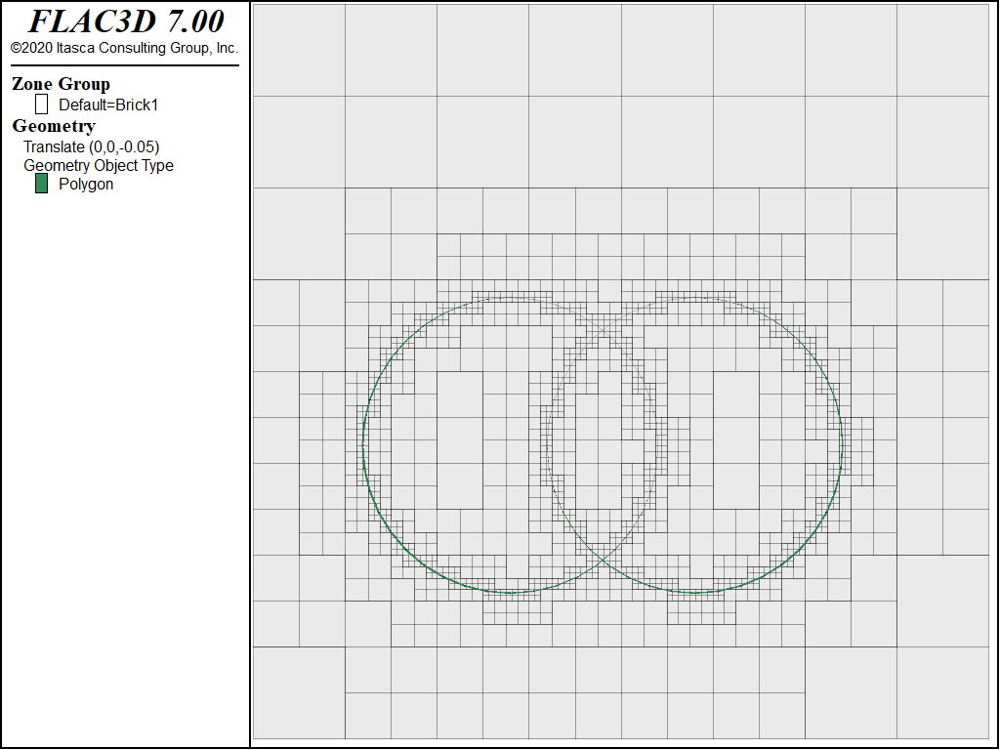
图 31：通过 加密网格单元（zone densify） 生成的八叉树网格。
请记住，在使用 单元附着按面（zone attach by-face） 命令将悬挂节点连接到相邻面之前，不应运行该网格。另请注意，网格单元尺寸梯度较大，可能增加达到平衡所需时间，并改变模型趋于平衡的路径。
以下数据文件给出更接近实际的示例：以简单矩形网格为起点，创建复杂矿体的八叉树网格。
model new
zone create brick size (10,15,10) point 0 (25000,20000,0) ...
point 1 (35000,20000,0) ...
point 2 (25000,35000,0) ...
point 3 (25000,20000,10000)
geometry import 'orebody.stl'
zone densify segments 2 gradient-limit edge-limit 50 repeat ...
range geometry-distance 'orebody' gap 0.0 extent
zone group 'orebody' range geometry-space 'orebody' count odd
该操作的结果如下图所示。最后一条 zone group 命令使用 几何空间范围（range geometry-space） 范围元素，选择几何表面“内部”的网格单元。

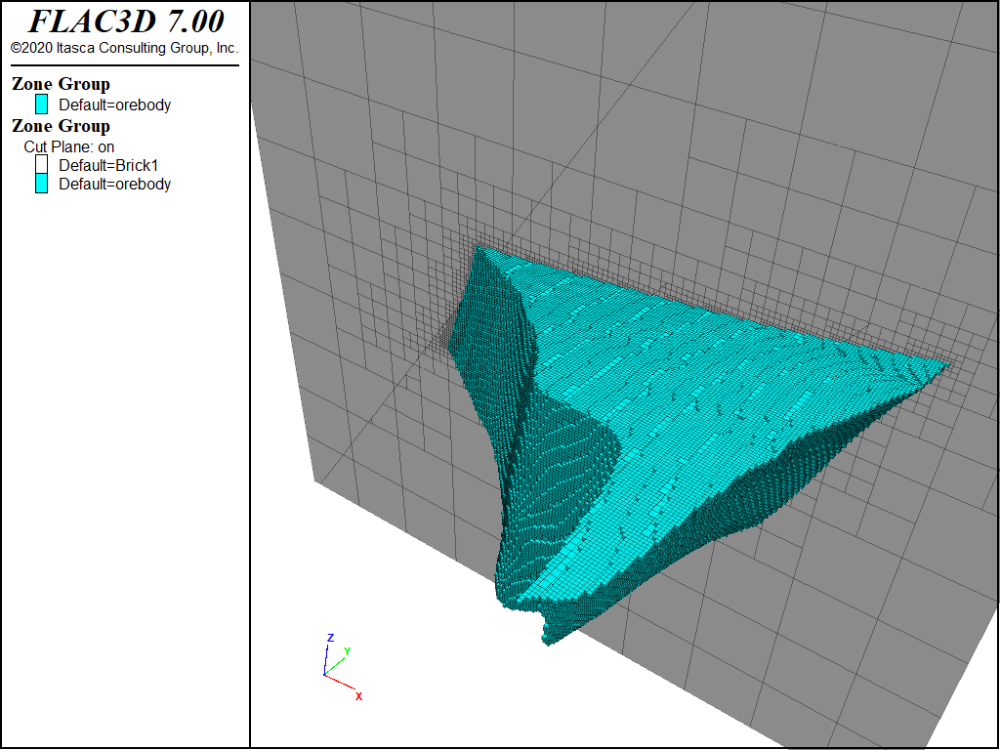
图 32：通过 加密网格单元（zone densify） 生成的八叉树网格。
地表地形与分层
FLAC3D 提供 按地形生成单元命令（zone generate from-topography） 命令，用于在现有网格的外表面与表征地形的几何集合之间生成网格。通过从指定范围内的面，沿射线方向向指定几何集合拉伸，创建网格单元。此方法可用于创建一系列不规则且互不相交的层，更常用于在顶部添加一层与不规则地形表面吻合的网格单元。以下给出几个简单用例。
要创建与地形表面吻合的网格，必须指定几何集合（geometry set）。创建几何集合最简单的方法是使用 导入几何对象（geometry import） 命令。还有其他命令（Additional commands）可操作边、多边形和节点，以及对整个几何集合执行其他操作。
使用 按地形生成单元命令（zone generate from-topography） 命令前，必须已有初始网格。只有满足以下所有条件的网格单元面才会被选择：
- 面必须位于指定范围内。
- 面必须位于已有网格的表面，内部面一律忽略。
- 面的外法向矢量与射线的夹角必须小于 89.427 度。这将排除与射线平行的面（夹角为 90 度），以及朝向与射线相对相反方向的面（夹角大于 90 度且不大于 180 度）。
下一示例的数据文件首先从 STL 格式文件 surface1.stl 几何文件（surface1.stl） 导入几何数据，并将其放入名为 几何集 surface1（surface1） 的几何集合。（默认情况下，几何集合名与刚导入的文件名相同。）然后创建分组名为 图层 1（Layer1） 的背景网格。几何集合和背景网格见下图。可以看到，投影到 \(x\)-\(y\) 平面时，几何集合完全覆盖背景网格，因此范围内有效面上的任意节点，沿射线方向拉伸时都会与几何集合存在交点。
创建网格和几何集合
model new
geometry import 'surface1.stl'
zone create brick size 50 40 5 ...
point 0 (0, 0,-4000) point 1 (15000,0,-4000) ...
point 2 (0,12000,-4000) point 3 ( 0,0,-2000) ...
group 'Layer1'

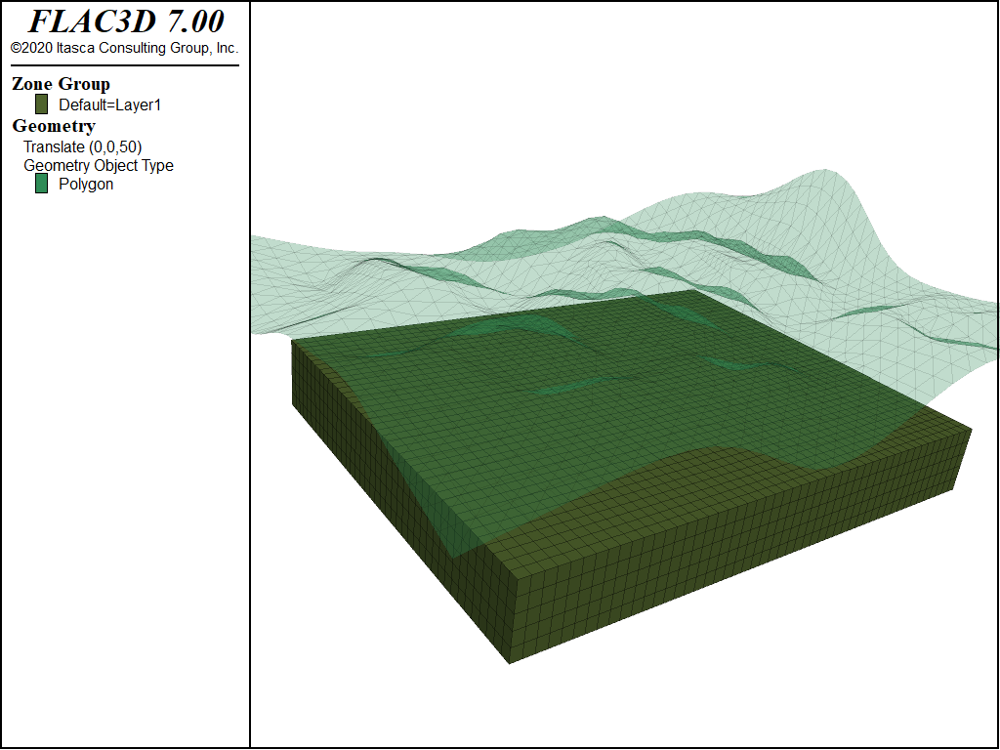
图 33：现有网格和几何集合。
接着添加 按地形生成单元命令（zone generate from-topography） 命令，并在命令中指定 几何集 surface1（surface1） 几何集合。未指定射线方向，因此采用默认方向 (0, 0, 1)。segment 数量为 8，因此将在选定面与几何表面之间创建 8 个网格单元。新创建的网格单元将在 默认（Default） 槽位中赋予分组名 图层 2（Layer2）。该命令未为面指定范围，因此现有网格（图层 1（Layer1） 组）表面的所有面均参与向几何集合拉伸。但本例会忽略四个侧面上的网格单元面，其法向向量垂直于射线方向 (0, 0, 1)，以及底面上法向向量与射线方向相反（夹角为 180 度）的面，因此实际上仅使用 Layer1 组顶面上的面创建新网格。完成后的网格见下图，正确体现了几何集合的地形。
添加地表地形网格单元
model new
geometry import 'surface1.stl'
zone create brick size 50 40 5 ...
point 0 (0, 0,-4000) point 1 (15000,0,-4000) ...
point 2 (0,12000,-4000) point 3 ( 0,0,-2000) ...
group 'Layer1'
zone generate from-topography geometry-set 'surface1' ...
segments 8 group 'Layer2'

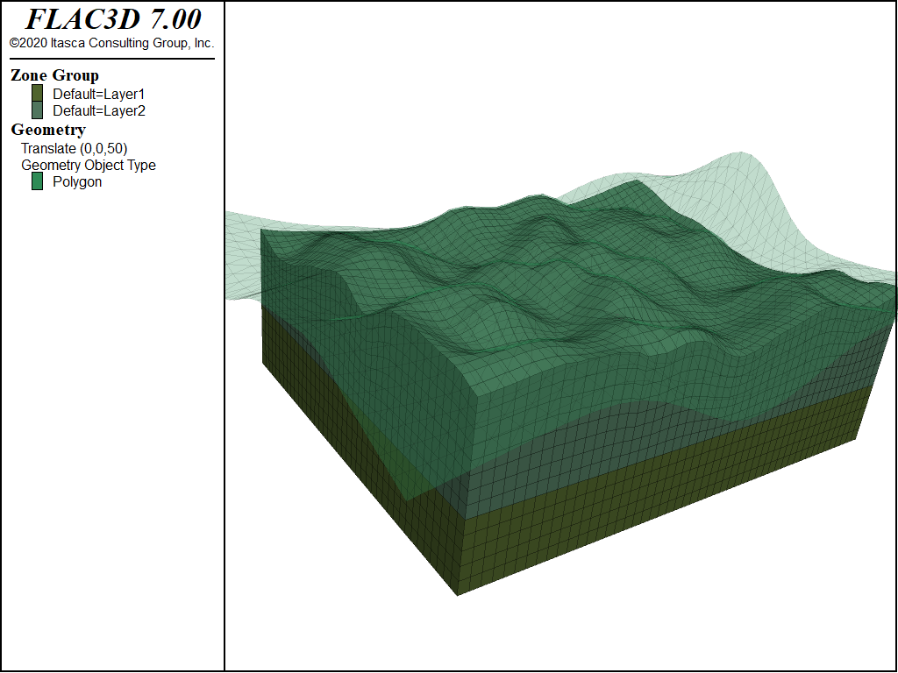
图 34：通过 按地形生成单元命令（zone generate from-topography） 命令创建的网格。
下一示例为 按地形生成单元命令（zone generate from-topography） 命令添加两个新关键字。第一个是 ratio，设为 0.6。它改变靠近表面时的网格单元尺寸分布；本例中，每个网格单元的尺寸为下一个的 0.6 倍。第二个是 face-group，为新创建的网格单元表面赋予分组名，以便后续引用。
使网格单元向表面渐变
model new
geometry import 'surface1.stl'
zone create brick size 50 40 5 ...
point 0 (0, 0,-4000) point 1 (15000,0,-4000) ...
point 2 (0,12000,-4000) point 3 ( 0,0,-2000) ...
group 'Layer1'
zone generate from-topography geometry-set 'surface1' ...
segments 8 ratio 0.6 group 'Layer2' ...
face-group 'Surface'

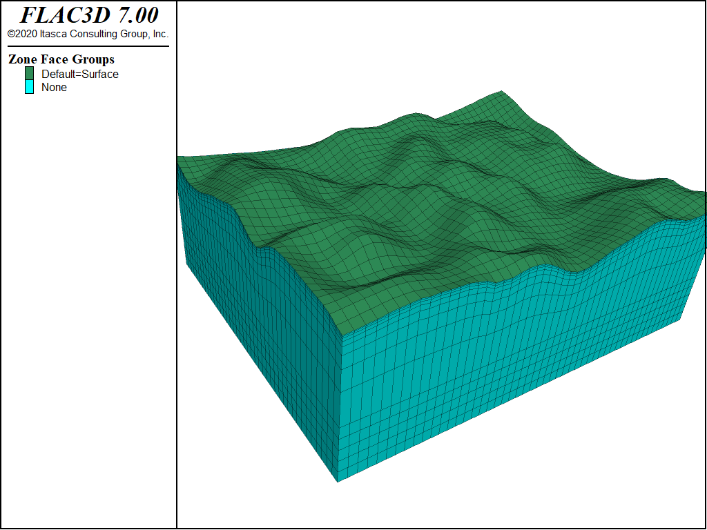
图 35：通过 按地形生成单元命令（zone generate from-topography） 命令创建的网格（ratio=0.6）。
下一示例对背景网格上的面应用范围。该范围仅限于形心坐标满足 0 ≤ \(x\) ≤ 5000 和 0 ≤ \(y\) ≤ 50000 的面。应强调，按地形生成单元命令（zone generate from-topography） 中的范围选择的是网格单元面。
限制表面区域
model new
geometry import 'surface1.stl'
zone create brick size 50 40 5 ...
point 0 (0, 0,-4000) point 1 (15000,0,-4000) ...
point 2 (0,12000,-4000) point 3 ( 0,0,-2000) ...
group 'Layer1'
zone generate from-topography geometry-set 'surface1' ...
segments 8 ratio 0.6 group 'Layer2' ...
range position-x 0 5000 position-y 0 5000

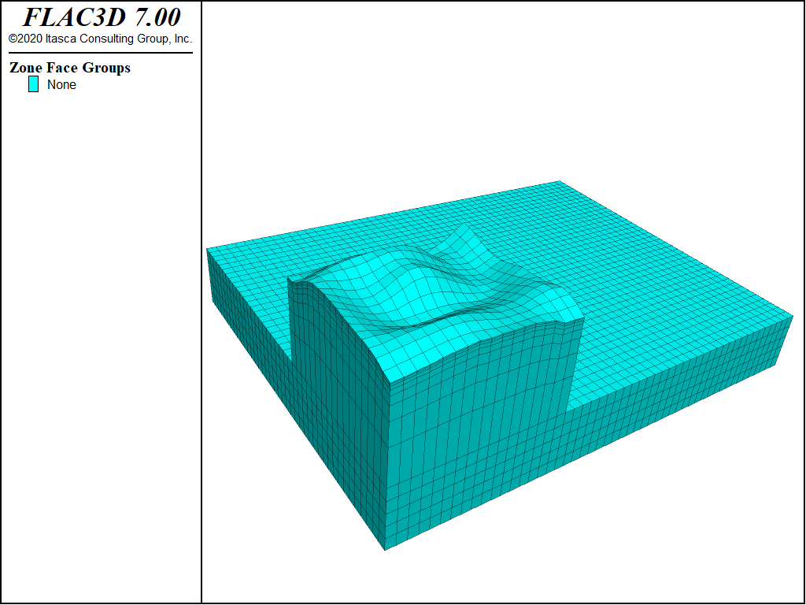
图 36：通过 按地形生成单元命令（zone generate from-topography） 命令创建的网格（对面应用了范围）。
在某些情况下，几何表面可能无法覆盖选定面沿射线方向的投影区域。对此，FLAC3D 先在几何集合中找到距从相关网格点发出的射线最近的点 A，再找到“虚拟”交点 B，使 A 和 B 到投影平面的距离相同。完成后的网格见下方第二幅图。
未覆盖网格单元范围的表面
model new
geometry import 'surface1.stl'
zone create brick size 50 40 5 ...
point 0 (-10000,-10000,-4000) point 1 ( 15000,-10000,-4000) ...
point 2 (-10000, 12000,-4000) point 3 (-10000,-10000,-2000) ...
group 'Layer1'
zone generate from-topography geometry-set 'surface1' ...
segments 8 ratio 0.6 group 'Layer2'

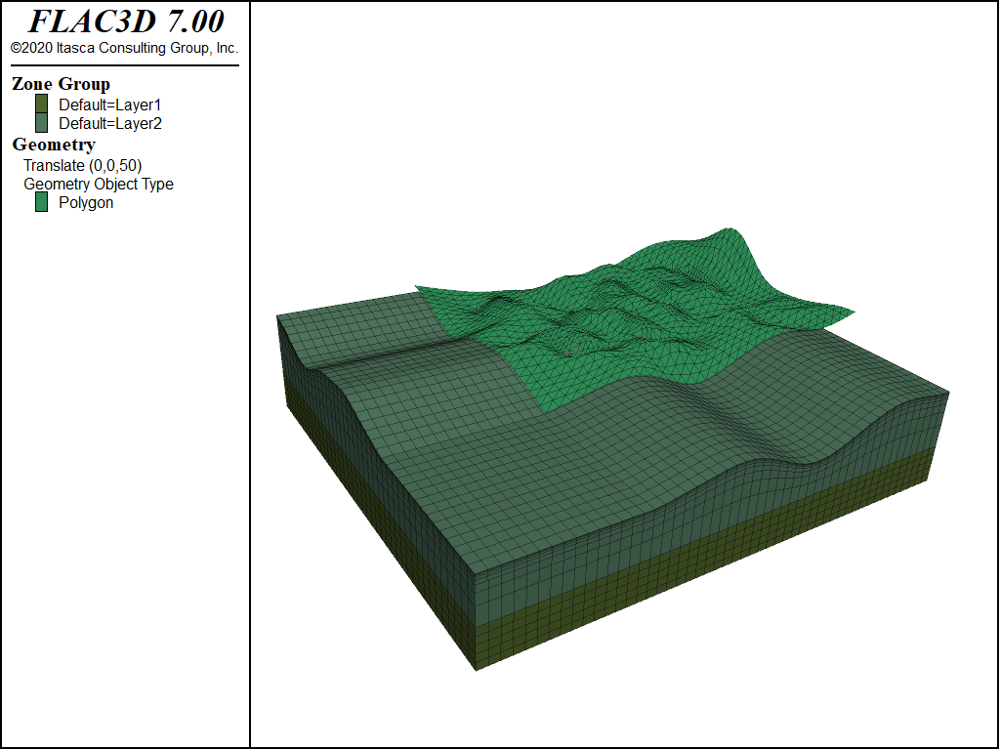
图 37：通过 按地形生成单元命令（zone generate from-topography） 命令创建的网格（投影到垂直射线的平面时，几何集合未完全覆盖背景网格）。
可以多次使用 按地形生成单元命令（zone generate from-topography） 命令创建多层网格。每次使用 按地形生成单元命令（zone generate from-topography） 命令时，最新网格都会被视为背景网格。还可使用 zone-face 关键字标记新网格单元的表面，以用于下一层。
下一示例通过简单的 设置当前几何集命令（geometry set） 命令创建第二个几何集合（名为 surface2）。然后使用 创建几何多边形命令（geometry polygon create） 在其中创建四边形多边形。接着发出第二条 按地形生成单元命令（zone generate from-topography） 命令，填充不规则表面（标记为 表面（Surface））与 表面 2（surface2） 集合中多边形之间的空间。
请注意，如有需要，后续可以用标记为 表面（Surface） 的面生成接触面。
使用多个几何集合创建网格
model new
geometry import 'surface1.stl'
zone create brick size 50 40 5 ...
point 0 (0, 0,-4000) point 1 (15000,0,-4000) ...
point 2 (0,12000,-4000) point 3 ( 0,0,-2000) ...
group 'Layer1'
zone generate from-topography geometry-set 'surface1' ...
segments 8 ratio 0.8 group 'Layer2' ...
face-group 'Surface'
; 创建下一层
geometry select 'surface2'
geometry polygon create by-positions (0,0,3000) (15000,0,3000) ...
(15000,12000,3000) (0,12000,3000)
zone generate from-topography geometry-set 'surface2' ...
segments 8 ratio 1.2 group 'Layer3' ...
range group 'Surface'

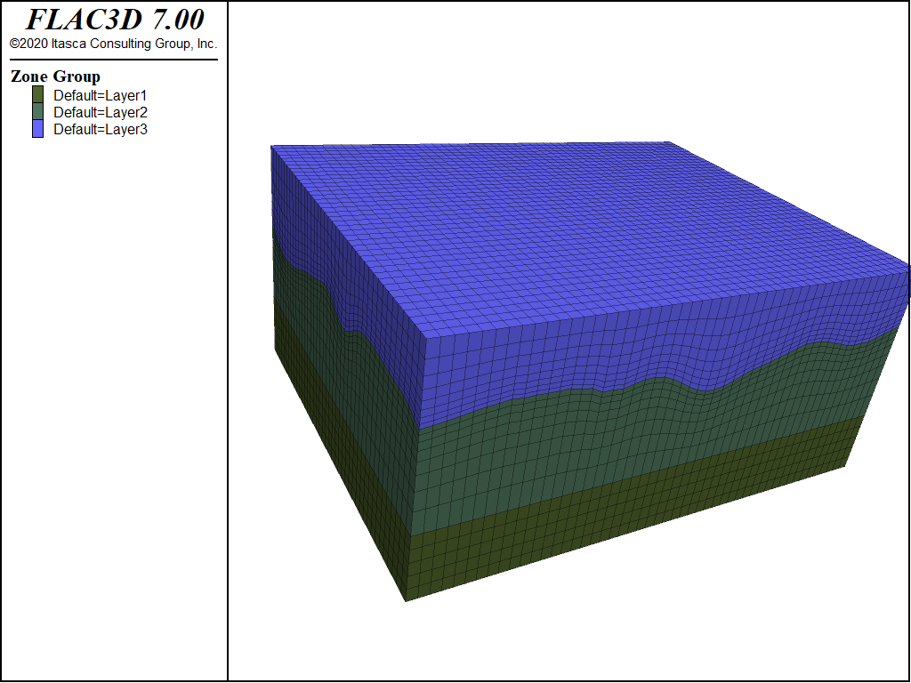
图 38：通过多条 按地形生成单元命令（zone generate from-topography） 命令创建的网格。
尾注
| [1] | 见 Rhino 维基百科页面（https://en.wikipedia.org/wiki/Rhinoceros_3D）。 |
| 这些内容对您有帮助吗？… | FLAC3D © 2019, Itasca | 原文更新于 2020 年 10 月 8 日 |